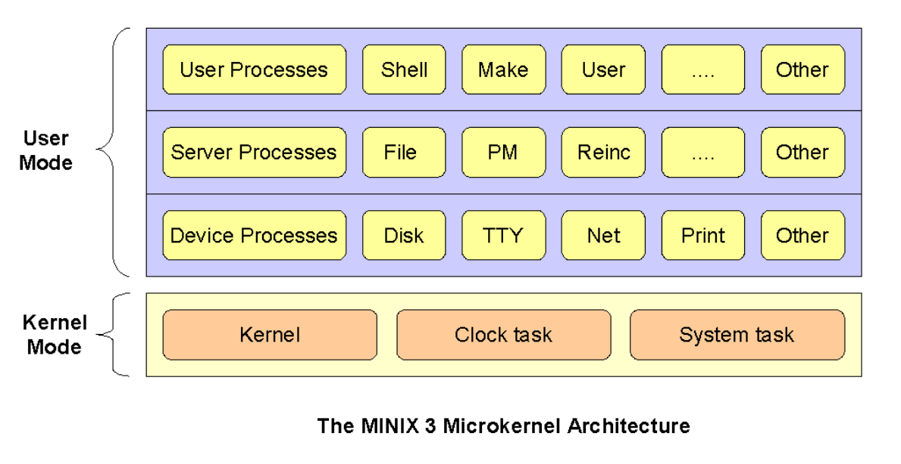

Micro versus monolithnic kernels: Minix and Linux
Contents
Micro versus monolithnic kernels: Minix and Linux#
1. MINIX: what is it?#
Developed by Dr. Andrew Tanenbaum in 1984.
UNIX-compatible operating systems for students
Design goals:
Build a UNIX V7 clone that ran on an IBM PC with only a single 360kB floppy disk;
Build and maintain the system using itself, or “self-hosting”;
Make the full source code available to everyone;
Have a clean design students could easily understand;
Make the (micro) kernel as small as possible, since kernel failures are fatal;
Break the rest of the operating system into independent user-mode processes;
Hide interrupts at a very low level;
Communicate only by synchronous message passing with clear protocols; and
Try to make the system port easily to future hardware.
2. MINIX: architecture#
Microkernel
Small
Handles interrupts, scheduling, and message passing.
Support API for kernel call.
User programs access kernel calls through system calls.
Device drivers
Runs in user space.
Each controls an I/O device.
Cannot issue I/O instructions directly.
Have to issue instructions via kernel call.
Additional overhead (~500ns)
Enable authorization.
Server processes
Most traditional system calls are located here.
User process send message to servers to request service (i.e., open, read, write, and close files …).
Servers in turn send messages to the corresponding device processes to have these requests performed.
Reincarnation server polls all other server for health report and kill/respawn faulty processes as needed.

2. MINIX: pros and cons#
Advantages
Modularity: the system is well structured and the relationship between the various components is equally well defined.
Security: the combination of the layered system structure and micro-kernel design makes for a architecture that allows for better incorporation of security. Layers 2 – Layer 3 run in User mode while only layer 1, runs in Kernel mode which has all the privileges needed to access any part of the system.
Extensibility: in order to have a functional system, one needs the kernel setup as well as the key services that are needed to start off. All the other functions can be added as and when needed. This makes it simpler to extend and/or specialize the function of the system.
Performance & Stability: most problems that cause instability on a computer system are a result of poor designed and/or poorly compiled drivers and user programs. The microkernel architecture allows these programs to be executed and implemented independent of the core components of the operating system, which means that a failure in any of those programs is not catastrophic to the system. The system is able to maintain uptime, despite errors.
Disadvantages
Complexity: the architecture is complex and hence makes it harder to design in the first place and to evolve as time moves on. The computer industry is probably amongst the fastest moving industry of the global economy and as such there is a real need to adjust to new developments in hardware as well as innovations in software.
Communications and Messaging: the architecture needs fast and efficient communications architecture so as to ensure faster communication between the various processes that are running in their individual address spaces as well as with varied security levels. A poor communications implement would negatively impact on the performance of the system.
3. Linux vs MINIX: the flame war of 1992#
Dr. Tanenbaum started it!
It has its own wiki page!.
Dr. Ngo was in 7th grade.
At that time, Linux:
was designed by Linus Torvald, an undergraduate student in Finland.
was inspired by Minix
Linux’s kernel is monolithic
Minux uses microkernel
Andrew Tanenbaum (AT)
Linus Torvald (LT)
AT#
Most older operating systems are monolithic, that is, the whole operating system is a single a.out file that runs in ‘kernel mode’ (UNIX, MS-DOS, VMS, MVS, OS/360, MULTICS …).
In a microkernel-based system, in which most of the OS runs as separate processes, mostly outside the kernel. (RC4000, Amoeba, Chorus, Mach, and the not-yet-released Windows/NT).
… among the people who actually design operating systems, the debate is essentially over. Microkernels have won. The only real argument for monolithic systems was performance, and there is now enough evidence showing that microkernel systems can be just as fast as monolithic systems.
MINIX is a microkernel-based system. LINUX is a monolithic style system. This is a giant step back into the 1970s. That is like taking an existing, working C program and rewriting it in BASIC. To me, writing a monolithic system in 1991 is a truly poor idea. MINIX was designed to be reasonably portable, and has been ported from the Intel line to the 680x0 (Atari, Amiga, Macintosh), SPARC, and NS32016. LINUX is tied fairly closely to the 80x86. Not the way to go.
LT#
Well, with a subject like this, I’m afraid I’ll have to reply.
True, linux is monolithic, and I agree that microkernels are nicer. From a theoretical (and aesthetical) standpoint Linux looses. What you (AT) don’t mention is that minix doesn’t do the micro-kernel thing very well, and has problems with real multitasking (in the kernel).
The fact is that linux is more portable than minix. It’s true - but not in the sense that ast (AT) means: I made linux as conformant to standards as I knew how (without having any POSIX standard in front of me). Porting things to linux is generally /much/ easier than porting them to minix.
I agree that portability is a good thing: but only where it actually has some meaning. There is no idea in trying to make an operating system overly portable: adhering to a portable API is good enough. The very /idea/ of an operating system is to use the hardware features, and hide them behind a layer of high-level calls. That is exactly what linux does: it just uses a bigger subset of the 386 features than other kernels seem to do. Of course this makes the kernel proper unportable, but it also makes for a /much/ simpler design. An acceptable trade-off, and one that made linux possible in the first place.
AT#
A multithreaded file system is only a performance hack. When there is only one job active, the normal case on a small PC, it buys you nothing and adds complexity to the code. On machines fast enough to support multiple users, you probably have enough buffer cache to insure a hit cache hit rate, in which case multithreading also buys you nothing. It is only a win when there are multiple processes actually doing real disk I/O. Whether it is worth making the system more complicated for this case is at least debatable.
MINIX was designed before POSIX, and is now being (slowly) POSIXized as everyone who follows this newsgroup knows. Everyone agrees that user-level standards are a good idea. As an aside, I congratulate you for being able to write a POSIX-conformant system without having the POSIX standard in front of you. I find it difficult enough after studying the standard at great length.
My point is that writing a new operating system that is closely tied to any particular piece of hardware, especially a weird one like the Intel line, is basically wrong. An OS itself should be easily portable to new hardware platforms.
When OS/360 was written in assembler for the IBM 360 25 years ago, they probably could be excused. When MS-DOS was written specifically for the 8088 ten years ago, this was less than brilliant, as IBM and Microsoft now only too painfully realize.
LT#
You (AT) admit that some of the errors of minix were that it was too portable: including machines that weren’t really designed to run unix. That assumption lead to the fact that minix now cannot easily be extended to have things like paging, even for machines that would support it. Yes, minix is portable, but you can rewrite that as doesn’t use any features”, and still be right.
A multithreaded file system is only a performance hack. Not true. It’s a performance hack /on a microkernel/, but it’s an automatic feature when you write a monolithic kernel - one area where microkernels don’t work too well. When writing a unix the “obsolete” way, you automatically get a multithreaded kernel: every process does it’s own job, and you don’t have to make ugly things like message queues to make it work efficiently.The operating system /isn’t/ tied to any processor line: UNIX runs on most real processors in existence. Yes, the /implementation/ is hardware-specific, but there’s a HUGE difference. You mention OS/360 and MS-DOG as examples of bad designs as they were hardware-dependent, and I agree. But there’s a big difference between these and linux: linux API is portable (not due to my clever design, but due to the fact that I decided to go for a fairly-well-thought-out and tested OS: unix.) If you write programs for linux today, you shouldn’t have too many surprises when you just recompile them for Hurd in the 21st century.
The bigger picture#
“The way the world was thinking about OS design at the time”.
“UNIX: A history and memoir” by Brian Kernighan.
“It’s important to understand the evolution of the technology that we use and take for granted. The decisions that shaped how that technology developed and thus defined the paths that we took were made by real people, working under the pressures and constraints of the time. The more we know about the history, the the more we can appreciate the inventive genius that led to Unix and perhaps better understand why modern computer systems are as they are. If nothing else, choices that might seem wrong-headed or perverse today can often be seen as natural consequences of what was understood and could be accomplished with the resources available at that time.”